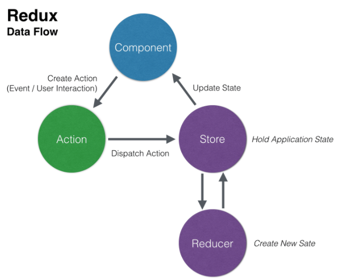

- As our applications have been gaining in size and complexity, we have seen how maintaining state has become more difficult. What is one problem the context API set out to solve? Give an example from your own coursework completed during this class.
- What was the hardest part about learning Redux? After finishing this course, how has learning Redux helped you understand anything else you have learned prior (think advanced react or javascript concepts)?

- Using the Context API provides a way to pass data through the component tree without having to pass props down manually at every level. I used the Context API in my Week 2 assignment: Ugly Things. The Context API structure with Providers and Consumers provided a convenient way to deliver methods and state to components that needed them without having to pass props to components that didn't utilize these methods and state.
- The hardest part about learning Redux was just grasping the concept at first. Why use it? After spending time with the course material and reviewing videos and readings, the concepts became a lot clearer and have started making sense. I think because we were introduced to several concepts of maintaining state without seeing a real-world complex application, the decision of what state management to utilize was un-clear (at first) and a little confusing. Now that I have utilized the different state management techniques with projects and assignments, they really all make a lot of sense. I really enjoyed learning Redux. I am a lot more comfortable with using it now after completing the course. I learned more about hooks by using Redux and going back it's more clear now for where other hooks are beneficial.